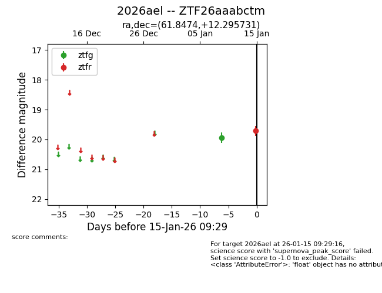
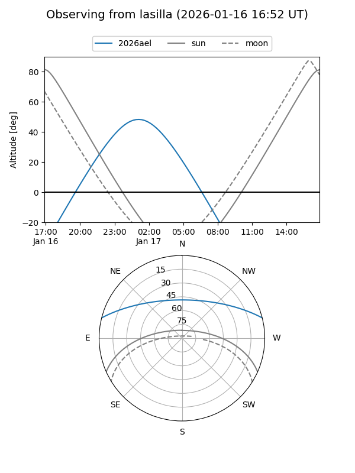
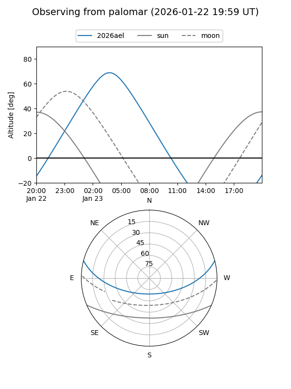

2026ael
Target 2026ael at 2026-01-15 09:30
Aliases and brokers:
FINK: link
Lasair: link
ALeRCE: link
TNS: link
YSE: link
alt names
ZTF26aaabctm (ztf,fink_ztf)
2026ael (tns,yse)
Coordinates:
equatorial (ra, dec) = 61.8474,+12.29573
equatorial (HMS+DMS) = 04:07:23.37,+12:17:44.63
galactic (l, b) = (179.7624,-28.26333)
Flags:
Photometry:
last ztfg=19.93, ztfr=19.71
1 ztfg, 1 ztfr detections
Lightcurve

Visibility


Additional plots